- 00 开篇词 练好基本功，优秀工程师成长第一步.md.html
- 01 CISC & RISC：从何而来，何至于此.md.html
- 02 RISC特性与发展：RISC-V凭什么成为“半导体行业的Linux”？.md.html
- 03 硬件语言筑基（一）：从硬件语言开启手写CPU之旅.md.html
- 04 硬件语言筑基（二）_ 代码是怎么生成具体电路的？.md.html
- 05 指令架构：RISC-V在CPU设计上到底有哪些优势？.md.html
- 06 手写CPU（一）：迷你CPU架构设计与取指令实现.md.html
- 07 手写CPU（二）：如何实现指令译码模块？.md.html
- 08 手写CPU（三）：如何实现指令执行模块？.md.html
- 09 手写CPU（四）：如何实现CPU流水线的访存阶段？.md.html
- 10 手写CPU（五）：CPU流水线的写回模块如何实现？.md.html
- 11 手写CPU（六）：如何让我们的CPU跑起来？.md.html
- 12 QEMU：支持RISC-V的QEMU如何构建？.md.html
- 13 小试牛刀：跑通RISC-V平台的Hello World程序.md.html
- 14 走进C语言：高级语言怎样抽象执行逻辑？.md.html
- 15 C与汇编：揭秘C语言编译器的“搬砖”日常.md.html
- 16 RISC-V指令精讲（一）：算术指令实现与调试.md.html
- 17 RISC-V指令精讲（二）：算术指令实现与调试.md.html
- 18 RISC-V指令精讲（三）：跳转指令实现与调试.md.html
- 19 RISC-V指令精讲（四）：跳转指令实现与调试.md.html
- 20 RISC-V指令精讲（五）：原子指令实现与调试.md.html
- 21 RISC-V指令精讲（六）：加载指令实现与调试.md.html
- 22 RISC-V指令精讲（七）：访存指令实现与调试.md.html
- 23 内存地址空间：程序中地址的三种产生方式.md.html
- 24 虚实结合：虚拟内存和物理内存.md.html
- 25 堆&栈：堆与栈的区别和应用.md.html
- 26 延迟分配：提高内存利用率的三种机制.md.html
- 27 应用内存管理：Linux的应用与内存管理.md.html
- 28 进程调度：应用为什么能并行执行？.md.html
- 29 应用间通信（一）：详解Linux进程IPC.md.html
- 30 应用间通信（二）：详解Linux进程IPC.md.html
- 31 外设通信：IO Cache与IO调度.md.html
- 32 IO管理：Linux如何管理多个外设？.md.html
- 33 lotop与lostat命令：聊聊命令背后的故事与工作原理.md.html
- 34 文件仓库：初识文件与文件系统.md.html
- 35 Linux文件系统（一）：Linux如何存放文件？.md.html
- 36 Linux文件系统（二）：Linux如何存放文件？.md.html
- 37 浏览器原理（一）：浏览器为什么要用多进程模型？.md.html
- 38 浏览器原理（二）：浏览器进程通信与网络渲染详解.md.html
- 39 源码解读：V8 执行 JS 代码的全过程.md.html
- 40 内功心法（一）：内核和后端通用的设计思想有哪些？.md.html
- 41 内功心法（二）：内核和后端通用的设计思想有哪些？.md.html
- 42 性能调优：性能调优工具eBPF和调优方法.md.html
- 先睹为快：迷你CPU项目效果演示.md.html
- 加餐01 云计算基础：自己动手搭建一款IAAS虚拟化平台.md.html
- 加餐02 学习攻略（一）：大数据&云计算，究竟怎么学？.md.html
- 加餐03 学习攻略（二）：大数据&云计算，究竟怎么学？.md.html
- 加餐04 谈谈容器云与和CaaS平台.md.html
- 加餐05 分布式微服务与智能SaaS.md.html
- 国庆策划01 知识挑战赛：检验一下学习成果吧！.md.html
- 国庆策划02 来自课代表的学习锦囊.md.html
- 国庆策划03 揭秘代码优化操作和栈保护机制.md.html
- 温故知新 思考题参考答案（一）.md.html
- 用户故事 我是怎样学习Verilog的？.md.html
- 结束语 心若有所向往，何惧道阻且长.md.html
- 捐赠
33 lotop与lostat命令：聊聊命令背后的故事与工作原理
你好，我是LMOS。
前面的课程里，我们学习了IO Cache、IO调度和IO管理的相关知识，但怎样度量和检测一个应用使用IO的情况呢？我们今天就来聊聊这个问题。
这节课我想带你认识两大监控IO操作的神器——iostat与iotop，让你掌握安装、使用它们的方法以及它们的工作原理。在Linux系统上，iostat和iotop这两个IO数据工具非常常用。它们都是性能分析领域中不可缺少的工具性软件，也经常被Linux网络服务器运维人员，用于分析某些服务器的IO类性能与故障。
安装iostat与iotop
在带你安装这两个工具之前，我先简单介绍下这两个工具的功能。iostat可以用来分析Linux系统整体IO的使用情况；而iotop作为iostat增强版和功能升级版，可以分析Linux系统每一个进程使用IO的情况。
在我们日常使用的Linux发行版中，是不包含iostat与iotop两个IO工具软件包的，需要我们自行安装它们才可以使用。
各大Linux发行版软件包管理方法并不统一，导致安装应用软件的方式不尽相同。考虑到Ubuntu、Deepin都是基于Debain开发的，所以我们这里以Debain系的Linux发行版为例进行操作。
我们只要在终端中输入如下命令，就可以安装iostat与iotop了。
//安装iostat
sudo apt-get install sysstat
//安装iotop
sudo apt-get install iotop
不过，我们并不能直接安装iostat，这样会提示找不到iostat软件包，因为它是包含在sysstat软件包中，所以我们必须先安装sysstat；而iotop却是独立的软件包，直接安装它就好了。如果你的Linux系统软件源和网络没有问题，肯定能安装成功。
你可能对这两个命令的使用方法不熟悉，没事，我们不妨在终端里输入这两个命令试一试，看看会出现什么效果。后面截图展示的是我自己机器上的情况：
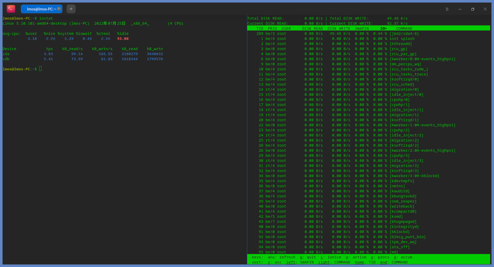
上图中左边是iostat命令执行的结果，右边是iotop命令执行的结果。如果你现在还看不懂这些信息，也没有关系，我们后面再介绍，这里仅仅是为了给你一个参考，你输入命令后显示效果类似上图的话，就说明安装成功了。
iostat命令
在前面我们已经成功安装了iostat命令，接下来我们重点聊聊它的使用方法，还有输出的数据表示的是什么。
iostat命令，是用来展示系统中的IO设备和CPU使用情况的。它的最大优势在于能汇报所有块设备活动的统计情况，同时也能汇报出CPU使用情况。但是iostat命令有一个缺陷，就是它不能对每个应用程序进程进行深入分析，只能分析系统的整体情况。
我们先来看iostat如何使用，它的使用形式如下：
iostat [选项] [参数]
“[]”中的内容可以省略，我们直接在终端中输入iostat，就会输出相关的全部信息。但是我们如果要观察特定信息，就需要使用相关选项了，我给你列了一个表梳理了最常用的部分，如下所示：
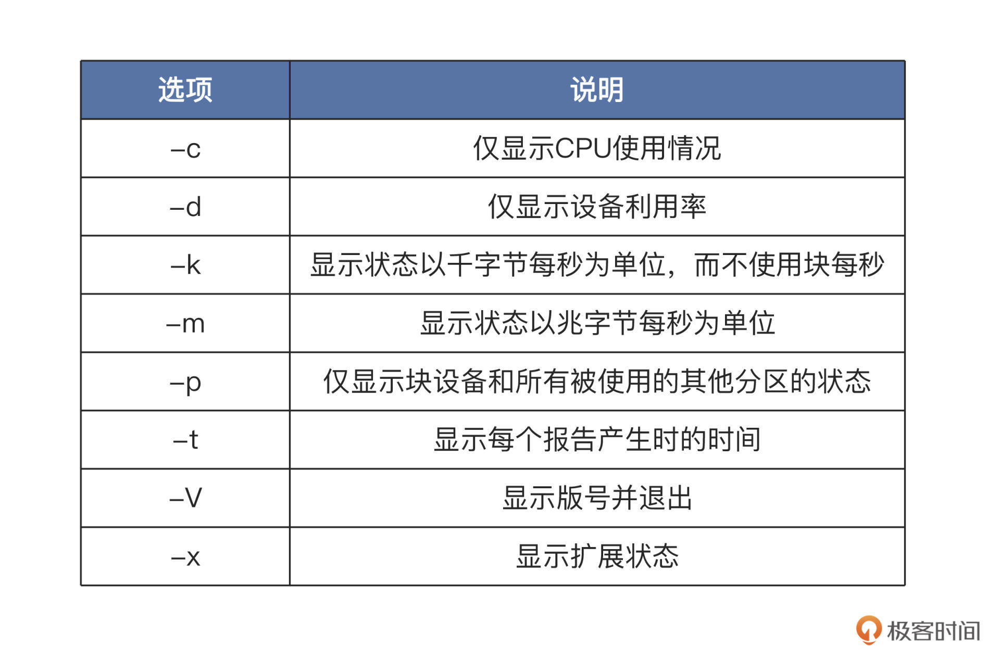
了解了选项，还有个参数我们可能用得上，这个参数可以指定为设备名，比如/dev/sda。如果不带参数，就会默认显示所有IO储存设备的情况。
好，我们就这来练练手，使用iostat命令看看我们自己机器上的IO设备，主要是硬盘的使用情况。这里我们使用iostat -d -m -p -x 这个命令，该命令可以显示所有硬盘及其分区的信息，在我的机器上情况如下所示：
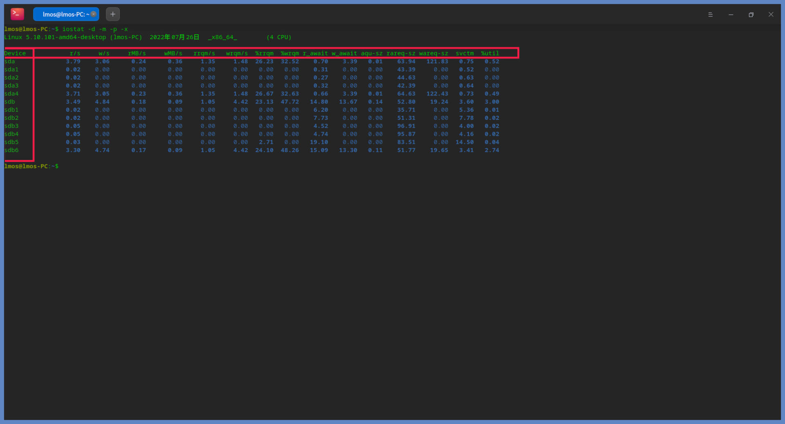
上图中展示了所有硬盘及其分区的IO情况，第一列就是设备名，后面几列的相关说明，我用表格方式给你做了梳理：
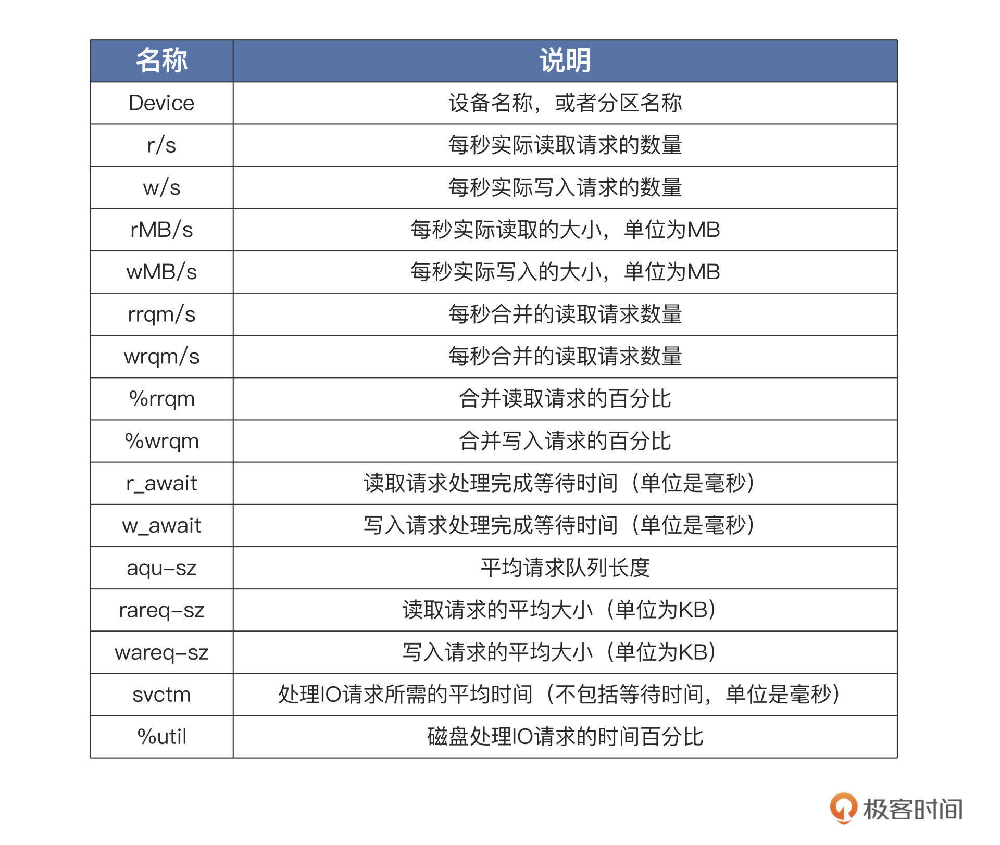
有了这些量化数据，我们就能判断每个硬盘分区的IO使用情况，从而分析出哪个设备占用IO请求量高或者低、占用时间多少、读取或者写入的数据量有多少。这样，性能瓶颈出现在哪个设备上，我们心中就有数了。
接下来我们继续讲解iostat的工作原理。iostat命令只是一个应用软件，它的功能就是计算统计数据并且显示。IO设备操作的数据肯定来源于内核，那iostat怎么获取这些数据就成了关键。
Linux的内核数据，都是以文件的形式提供的。换句话说，就是我们想要获取什么数据，就相应去读取什么文件。
下面我们手动读取一些文件，体验一下具体是什么情况，如下所示：
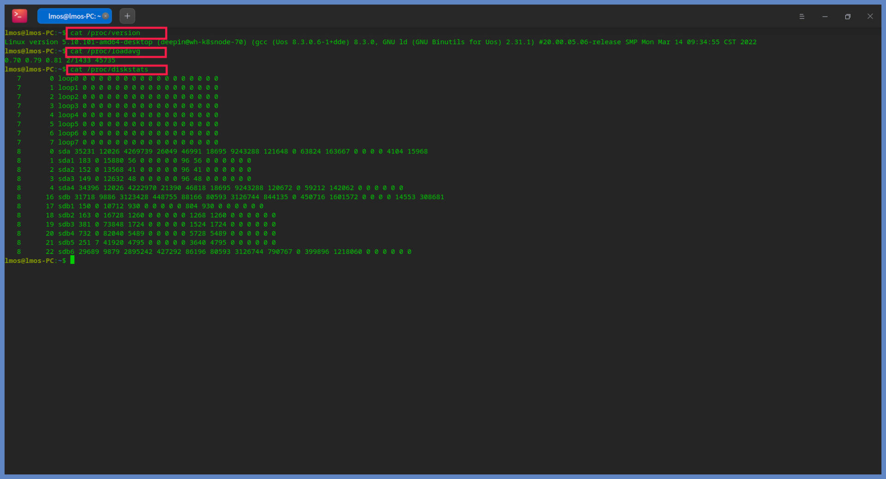
对比iostat产生的数据，是不是感觉和上面读取的三个文件得到的数据很相似？是的，你猜的没有错，这些文件就是iostat命令的数据来源，主要的数据来源是/proc/diskstats文件，它记录着块设备IO操作的全部统计信息。
下面我列了一个表，梳理了文件名和对应的统计信息，你可以看看：
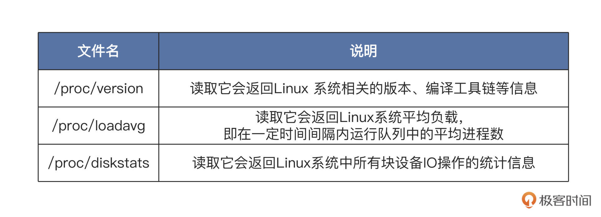
我们来看一看/proc/diskstats文件的数据结构，它的每一行代表一个块设备或者块设备的分区，总共20列数据，每一列的内容如下表：
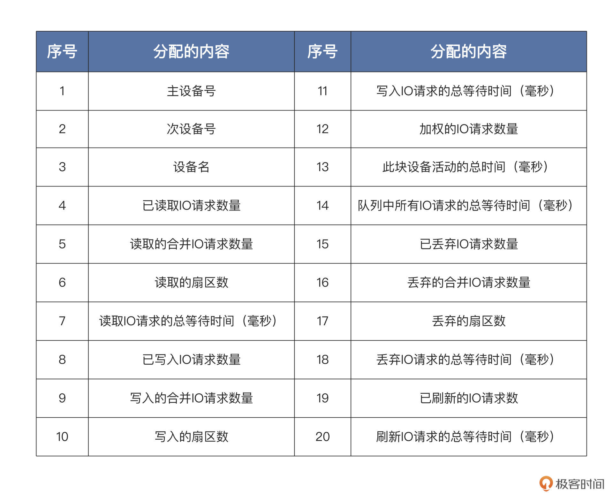
Linux块设备层在处理每个IO请求的时候，都会更新这些数据，具体的流程这里不展开了，iostat只使用了其中部分数据。由于这些数据是线性增加的，iostat只需要经过多次采集，进行简单的运算就可以了。
iostat只是负责的工作其实很简单，就是采集数据并计算显示。我们通过一段时间的IO请求数据、写入和读取的数据量、IO请求等待时间等等这些数据，就可以评估一个设备的IO性能了。好了关于iostat的工作原理我们讲到这里，我们接着探索iotop命令。
iotop命令
我们前面刚学过的iostat这个IO工具，只能收集量化到每个块设备的读写情况，但如果我们想知道每个进程是如何使用IO的就做不到，这就要用到iotop命令了。
iotop命令是一个top类工具，可以监视磁盘I/O使用状况，还可以作为iostat的升级工具使用。iotop命令具有与Linux系统自带的top相似的UI，只是top更关注进程，而iotop更关注IO。
iotop命令它是使用Python语言编写而成，需要用Python2.5以上的版本和Linux内核2.6以上的版本。iotop提供了源代码和二进制软件包，可以自己选择安装。在前面我们已经安装了iotop，如果你没有安装好，请回到前面看看怎么安装的。
像iostat一样，我们一起看看iotop如何使用，它的使用形式如下：
iotop [选项]
“[]”中的内容可以省略，直接在终端中输入iotop就会输出相关的全部信息，这一点与iostat相同，但是我们如果要观察特定信息，就需要使用相关选项了。我给你列了一个表梳理选项，如下所示：- 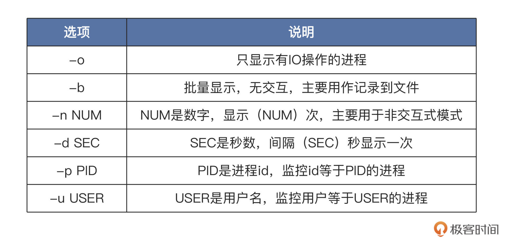
我们马上来测试一下，使用sudo iotop 命令，注意该命令需要root权限才能运行，在前面要加上sudo。这条不带任何选项的命令，会显示所有用户的所有进程使用IO的情况，在我的机器上情况如下所示：
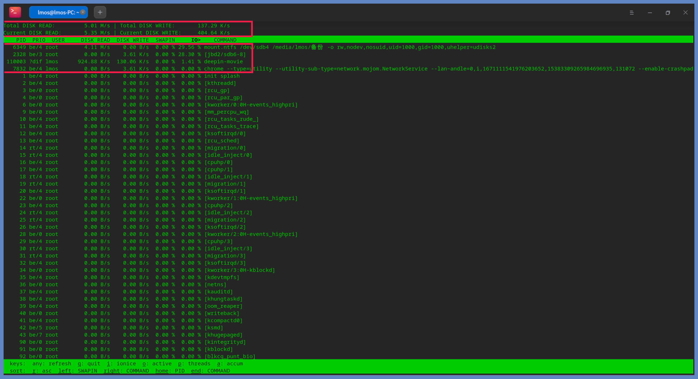
上图中展示了所有进程读写硬盘的情况，头部的数据显示了每一秒钟，所有硬盘和当前硬盘的读写数据量。而下面的每一行代表一个进程，每一行的第一列就是进程id，也可以在运行过程中近“p”切换为线程id，那一行就表示一个线程。后面几列的相关说明，我给你列出了一个表格，如下所示：
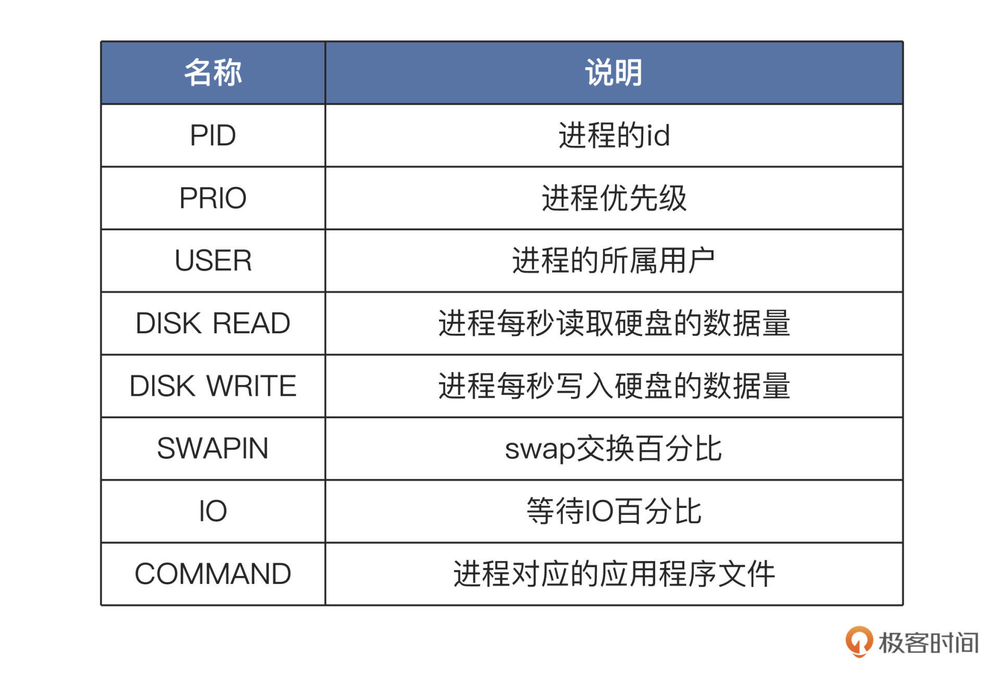
有了这些量化数据，我们就能判断哪些进程是IO型进程，哪些进程是计算型进程，每个进程的访问IO的数据一目了然。
根据这些数据，我们还能进一步分析出哪个进程使用IO的量是高或者低、占用时间多少、进程优先级多少。IO性能瓶颈出现在哪个进程上，需要优化哪个进程的IO模型，我们心中就有底了。
我们已经了解iotop的作用是观察所有进程的IO操作情况，那iotop的工作原理是什么呢？与iostat命令一样，iotop只是一个应用软件，用来统计所有进程的IO数据并显示。进程和IO操作数据必定来源于Linux内核，那iotop怎么获取这些数据呢？
在Linux上这些内核数据，都是以文件的形式提供的，即要获取什么数据，就读取什么文件。为了验证这个想法，下面我们试验一下，看看iotop是不是也是读取了一些/proc目录下的文件呢。
其实iotop是开源的，我们不妨下载它的代码来研究一下，命令如下：
//下载
wget http://guichaz.free.fr/iotop/files/iotop-0.4.4.tar.gz
//解压
tar zxf iotop-0.4.4.tar.gz
我已经帮你下载好了代码，放在了课程的工程目录中。我们进入工程目录，就可以发现iotop是用python写的，入口点是iotop.py文件。
在iotop/ui.pi里，这个文件中会调用主函数main，主函数进而会调用run_iotop_window函数执行主要功能。在run_iotop_window函数中会调用ProcessList对象，获取所有进程的相关信息。
我们不妨看一看它的代码片段，如下所示：
class ProcessList(DumpableObject):
def __init__(self, taskstats_connection, options):
# {pid: ProcessInfo}
self.processes = {}
self.taskstats_connection = taskstats_connection
self.options = options
self.timestamp = time.time()
self.vmstat = vmstat.VmStat()
# A first time as we are interested in the delta
self.update_process_counts()
def get_process(self, pid):
"""Either get the specified PID from self.processes or build a new
ProcessInfo if we see this PID for the first time"""
process = self.processes.get(pid, None)
if not process:
process = ProcessInfo(pid)
self.processes[pid] = process
if process.is_monitored(self.options):
return process
def list_tgids(self):
if self.options.pids:
return self.options.pids
tgids = os.listdir('/proc')
if self.options.processes:
return [int(tgid) for tgid in tgids if '0' <= tgid[0] <= '9']
tids = []
for tgid in tgids:
if '0' <= tgid[0] <= '9':
try:
tids.extend(map(int, os.listdir('/proc/' + tgid + '/task')))
except OSError:
# The PID went away
pass
return tids
def list_tids(self, tgid):
if not self.options.processes:
return [tgid]
try:
tids = map(int, os.listdir('/proc/%d/task' % tgid))
except OSError:
return []
if self.options.pids:
tids = list(set(self.options.pids).intersection(set(tids)))
return tids
def update_process_counts(self):
new_timestamp = time.time()
self.duration = new_timestamp - self.timestamp
self.timestamp = new_timestamp
for tgid in self.list_tgids():
process = self.get_process(tgid)
if not process:
continue
for tid in self.list_tids(tgid):
thread = process.get_thread(tid, self.taskstats_connection)
stats = self.taskstats_connection.get_single_task_stats(thread)
if stats:
thread.update_stats(stats)
thread.mark = False
return self.vmstat.delta()
我们来梳理一下上述代码都做了什么。在ProcessList类的构造方法init中，会调用update_process_counts方法，接着在其中调用list_tgids方法，该方法会打开/proc目录获取所有以数字命名的目录名称，那就是TGID。
TGID就是线程组ID，对于同一进程中的所有线程，TGID都是一致的，也就是该进程的进程ID。接着循环调用get_process方法，在该方法中会构造ProcessInfo对象以获取每个进程的数据。
ProcessInfo类的代码如下所示：
class ProcessInfo(DumpableObject):
def __init__(self, pid):
self.pid = pid
self.uid = None
self.user = None
self.threads = {} # {tid: ThreadInfo}
self.stats_delta = Stats.build_all_zero()
self.stats_accum = Stats.build_all_zero()
self.stats_accum_timestamp = time.time()
def get_uid(self):
if self.uid:
return self.uid
try:
uid = os.stat('/proc/%d' % self.pid)[stat.ST_UID]
except OSError:
# The process disappeared
uid = None
if uid != self.uid:
# Maybe the process called setuid()
self.user = None
self.uid = uid
return uid
def get_user(self):
uid = self.get_uid()
if uid is not None and not self.user:
try:
self.user = safe_utf8_decode(pwd.getpwuid(uid).pw_name)
except KeyError:
self.user = str(uid)
return self.user or '{none}'
def get_proc_status_name(self):
try:
first_line = open('/proc/%d/status' % self.pid).readline()
except IOError:
return '{no such process}'
prefix = 'Name:\t'
if first_line.startswith(prefix):
name = first_line[6:].strip()
else:
name = ''
if name:
name = '[%s]' % name
else:
name = '{no name}'
return name
def get_cmdline(self):
# A process may exec, so we must always reread its cmdline
try:
proc_cmdline = open('/proc/%d/cmdline' % self.pid)
cmdline = proc_cmdline.read(4096)
except IOError:
return '{no such process}'
#……
return safe_utf8_decode(cmdline)
def did_some_io(self, accumulated):
if accumulated:
return not self.stats_accum.is_all_zero()
for t in self.threads.itervalues():
if not t.stats_delta.is_all_zero():
return True
return False
def get_ioprio(self):
priorities = set(t.get_ioprio() for t in self.threads.itervalues())
if len(priorities) == 1:
return priorities.pop()
return '?dif'
def set_ioprio(self, ioprio_class, ioprio_data):
for thread in self.threads.itervalues():
thread.set_ioprio(ioprio_class, ioprio_data)
def ioprio_sort_key(self):
return ioprio.sort_key(self.get_ioprio())
def get_thread(self, tid, taskstats_connection):
thread = self.threads.get(tid, None)
if not thread:
thread = ThreadInfo(tid, taskstats_connection)
self.threads[tid] = thread
return thread
def update_stats(self):
stats_delta = Stats.build_all_zero()
for tid, thread in self.threads.items():
if thread.mark:
del self.threads[tid]
else:
stats_delta.accumulate(thread.stats_delta, stats_delta)
nr_threads = len(self.threads)
if not nr_threads:
return False
stats_delta.blkio_delay_total /= nr_threads
stats_delta.swapin_delay_total /= nr_threads
self.stats_delta = stats_delta
self.stats_accum.accumulate(self.stats_delta, self.stats_accum)
return True
以上代码，无一例外都是从/proc目录下那些数字命名的子目录里获取数据。我们不妨打开proc目录观察一下，并且我们还要选择一个特定的、数字命名的子目录进入，如下所示：
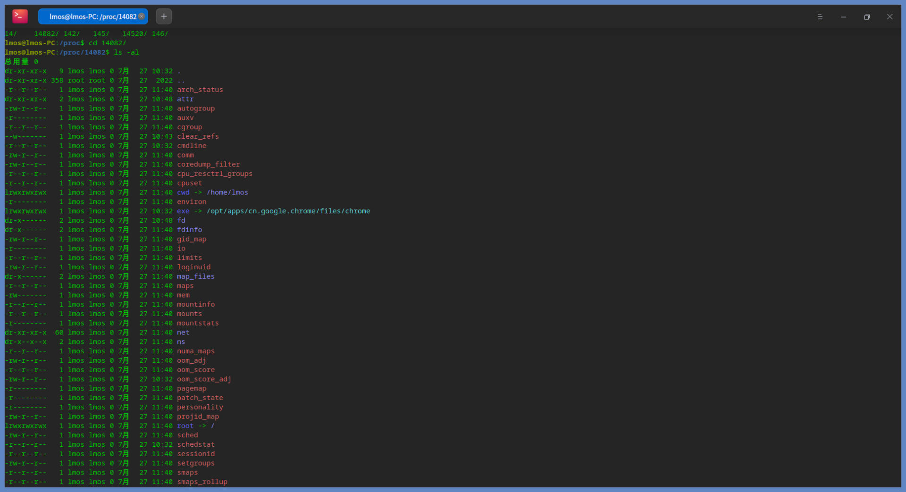
这是谷歌浏览器的进程，里面包含很多子目录，这些子目录中包括了进程的状态、属性、应用程序命令、打开的文件、IO、网络、虚拟内存空间、工作目录、权限、调度信息等大量信息数据。关于进程的所有信息，我们从这里都可以找到。而iotop也正是从这里获取数据，然后计算和显示的，这就是iotop的工作原理。
重点回顾
这节课我们一起学习了两大监控IO操作的神器，即iostat和iotop。它们俩在以后的性能调优路上，将是我们最忠诚的伙伴，一个观察系统全局IO情况，另一个用来查看单个进程的IO情况。有了它们，我们就能精确定位Linux服务器上IO性能瓶颈所在。
现在，让我们一起来回顾一下今天所学。首先我们安装了iostat和iotop。由于iostat包含在sysstat中，需要安装sysstat软件包，才能得到iostat。安装成功后，别忘了进行测试。
然后，我们学习了iostat怎么用，熟悉了它的选项和参数，以及iostat输出的数据表示什么。之后我们研究了iostat实现原理，它是通过读取/proc目录下的一些文件做到的。
iotop工具是一个用python语言编写的工具，它能监视全局硬盘的IO性能和每个进程的IO情况，是一个全面的IO监视工具。和iostat一样，它也是通过读取/proc目录下每个进程目录中的一些文件，获取其中的数据，再经过计算把数据展示给我们。
这节课的导图如下所示，供你参考：
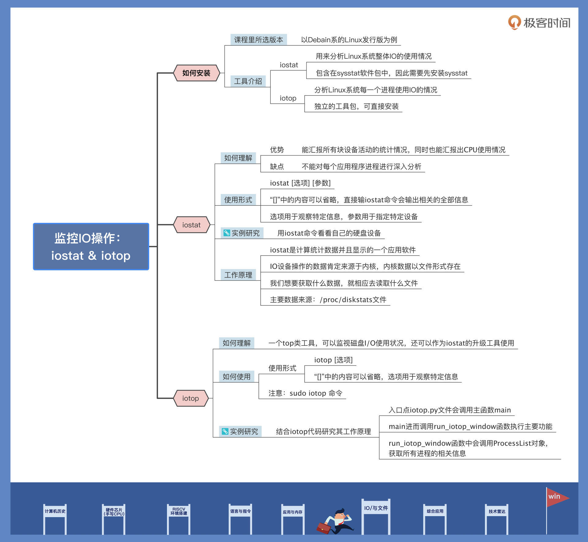
你是否想对/proc文件系统有更深的了解，写出更强大的监视工具呢？其实你需要的大部分数据源，都可以在/proc目录中找到，读取它们就能做出更符合自己业务需求的监视工具，赶快去大胆尝试吧。
思考题
请说一说 iostat与 iotop的不同之处？
欢迎你在留言区记录自己的收获或疑问，如果觉得这节课还不错，也别忘了推荐给自己身边的朋友。
© 2019 - 2023 Liangliang Lee. Powered by gin and hexo-theme-book.